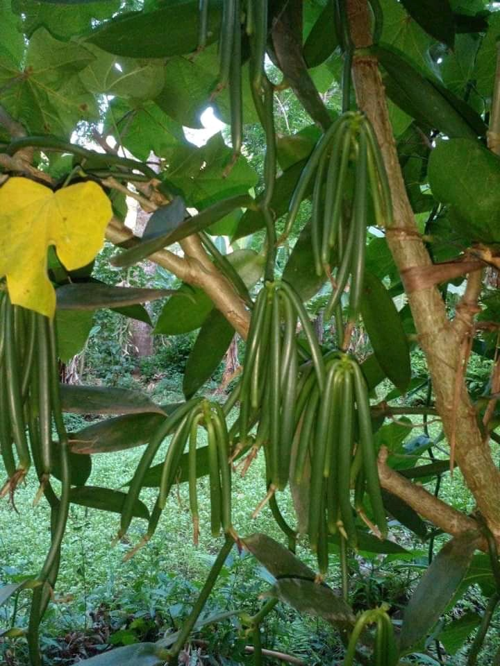
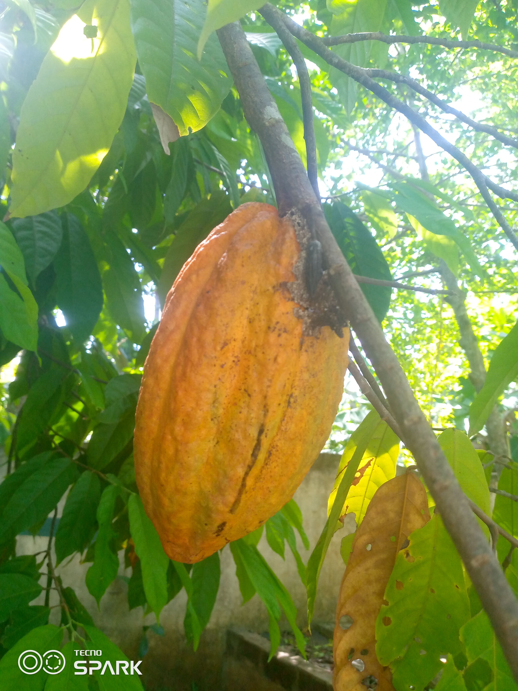

Nosy-Be


Un présent offert par les indiens pour la Reine Tsiomeko : un focus banian (ficus religiosa) avec une superficie de 5000 mètre carrée. Découvrez la culture, la tradition Sakalava et les mystères des endroits sacrées. Contacter
La cascade d'Androadroatra est la plus haute cascade de Nosy Be. On peut s'y baigner. Cet endroit est considéré sacré par la culture locale. Contacter
Lokobe est une réserve naturelle protégée renfermant de nombreux biodiversités endémiques à Madagascar. C'est la troisième montagne la plus haut de Nosy Be. Contacter
Marodoko a été la ville principale de Nosy Be jadis. Il renferme encore de nombreux vestiges de la civilisation indienne car Marodoko a été habité par des indiens autrefois. Les villageois proposent aussi des danses traditionnelles en vue de découvrir la culture locale. Contacter
Mont Passot est un spectacle panoramique à 329 mètres d'altitude. On compte sur ses alentours des dizaines de lacs sacrés. Il est possible aux randonneurs de découvrir des cascades et la biodiversité locale en se promenant sur les chemins de ces lacs sacrés. Mont Passot est surtout réputé pour son point de vue à 360° sur Nosy Be. L'endroit parfait pour admirer un coucher du soleil. Contacter
Littéralement Nosy Komba signifie l'île aux lémuriens. Dans le village d'Ampangorina situé à 15 mn de Hell-Ville en bateau rapide, vous pourriez voir les lémuriens Macaco (black lemur). Le village renferme un parc contenant des boas de Madagascar, des caméléons,... Les villageois ont de nombreuses talents qu'ils exposent : des richelieux, des sculptures en bois, des tableaux,... On peut apercevoir de la vanille aussi sur l'île car Nosy Komba produit les meilleurs vanilles au monde. Contacter
Tany Kely est l'un des plus beaux sites marines. C'est une île faisant partie de la commune urbaine de Nosy Be. Ces eaux sont des aquariums vivants (tortues de mer, différents poissons, ...) avec des fonds marins inoubliables. Depuis son phare, une vue panoramique exceptionnelle sur les alentours s'offrent à vous. Et l'île contient un musée pour le côté historique. Contacter
L'île aux tortues. Elle est située à 8 mn des rivagesd de Nosy Be depuis Chanty beach. Elle possède un fonds marin exceptionnel. Les tortues de mer vont vous surprendre sur la piscine naturelle. Contacter
Faites le tour de l'île de Nosy Be en visitant son grand marché (épices, légumes, poissons...). Découvrez les faunes et flores endémiques de Madagascar à Lemuria land et puis aller à la découverte de la culture locale à Marodoka ou à Arbre sacré. Après vous avez le choix de visiter la cascade Androadroatra. Et terminer votre journée, par la vue à 360° qu'offre Mont Passot en admirant le coucher du soleil. Contacter
Millot est une compagnie spécialisée dans l'exploitation du cacao. Enfaite, la ville d'Ambanja produit des tonnes de cacao. La visite de cette usine permet de découvrir comment se plante le cacao, comment le cacaoyer grandit et comment le cacao se transforme en chocolat. En plus de cela, cette compagnie cultive d'autres sortes de plantes (ylang ylang, café, ...). Contacter
Situé à 1 heures et 30 minutes en bateau rapide dans la commune rurale d'Ambanja. Nosy Iranja est une île composé de 2 îlots paradisiaque reliés par des sables blancs d'environ 1,2 km de marche où se passe la nidification des tortues de mer. Contacter